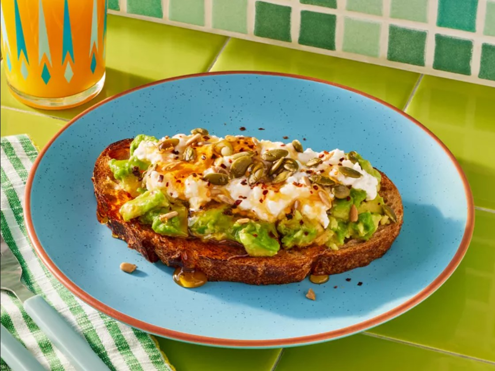

Home
Avocado Toast

Description
Avocado toast is a great meal for both breakfast and brunch that can be made quickly and easily!
This recipe details the required ingredient and instruction to make one serving of avocado toast, which contains:
- Calories: 783
- Fat: 53g
- Carbs: 66g
- Protein: 23g
Note: Suitable for vegetarians!
Ingredients
- 1 slice of sourdough bread
- 1/2 ripe avocado
- 1/3 cup cottage cheese
- 1 tablespoon sunflower nuts and/or roasted pumpkin seeds
- 1/2 teaspoon honey
- 1/8 teaspoon crushed red pepper flakes
- Salt
- Freshly ground black pepper
Instructions
- Toast the sourdough slice
- Smash the avocado
- Spread the smashed avocado onto the toasted slice of sourdough bread
- Top with cottage cheese
- Sprinkle with nuts/seeds, red pepper flakes, salt and pepper, and a drizzle of honey
- Serve immediately
Attributes
This recipe is made by Lisa Childs at
original recipe